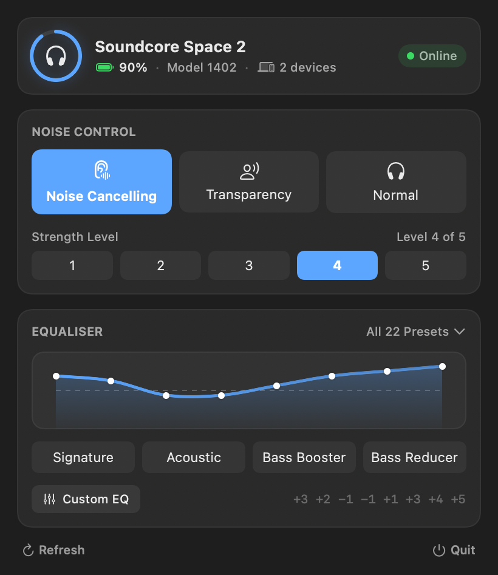
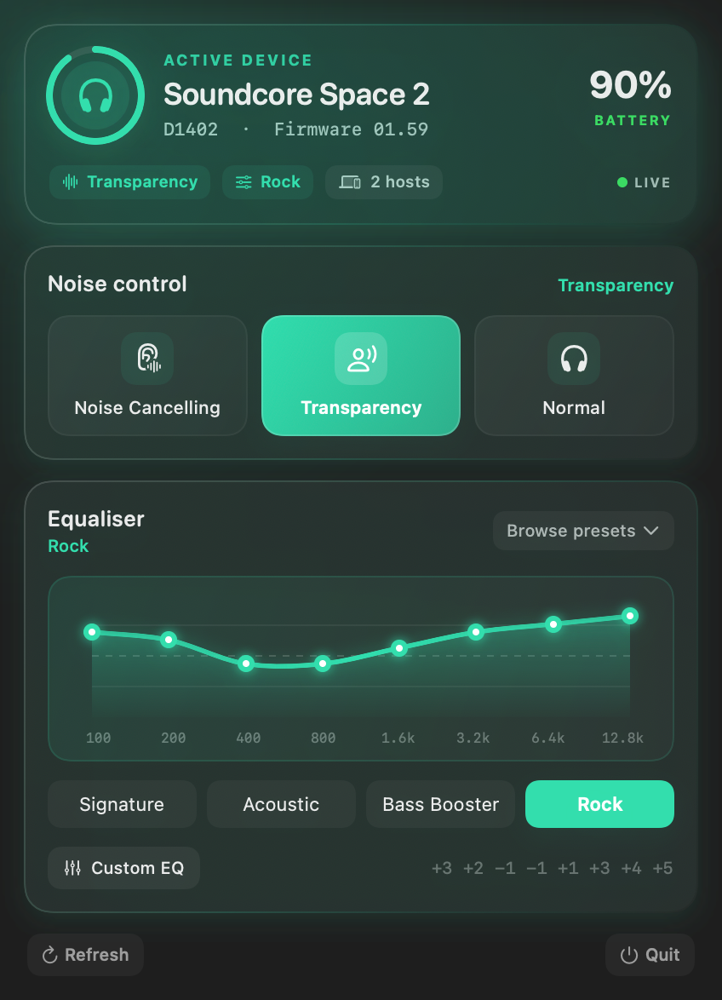

Control your Soundcore headphones from your Mac
A small menu bar app. No phone required.

The problem
Your headphones pair with your Mac and play audio perfectly well. But the moment you want to change noise cancelling or the equaliser, you have to pick up your phone and open the Soundcore app — because Anker only ships it for Android and iOS.
SoundcoreBridge puts those controls in your menu bar instead.
What you get
-
Noise cancellingOff, transparency, or on with strength 1 to 5.
-
EqualiserAll 22 presets, plus your own 8-band curve.
-
Battery and firmwareAt a glance, without opening anything.
-
A command line toolIf you'd rather script it.
A look at it

Install
$ brew tap mervin008/tap $ brew trust mervin008/tap $ brew install --cask --no-quarantine mervin008/tap/soundcorebridge
Homebrew asks you to trust third-party casks, hence the middle line. The app isn't notarised by Apple, which is what --no-quarantine takes care of. Needs macOS 13 or later.
Prefer a download? Grab the zip from releases.
Supported headphones
| Device | Status |
|---|---|
| Soundcore Space 2 | Full control |
| Other Soundcore models | Battery and firmware only |
Only the Space 2 has been tested against real hardware, so it's the only one that gets write access. If you have another model, open an issue and we can work out what it needs.
How it works
The app speaks the same Bluetooth protocol the phone app uses, worked out by watching real traffic. If you're curious, the details are in the protocol map.
Credits
- SonyBridge by AmitRajput-Dev — showed that this was possible on macOS at all
- OpenSCQ30 by Oppzippy — the reference Soundcore implementation
- SoundcoreManager by gmallios — earlier desktop client and protocol reference